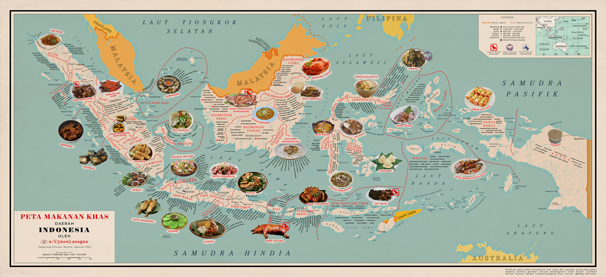

Rasa Nusantara
Peta Kuliner Indonesia
Rekomendasi Kuliner

Rendang
Asal Sumatera Barat

Gudeg
Asal Yogyakarta

Soto Banjar
Asal Kalimantan Selatan
Asal Sumatera Barat
Asal Yogyakarta
Asal Kalimantan Selatan